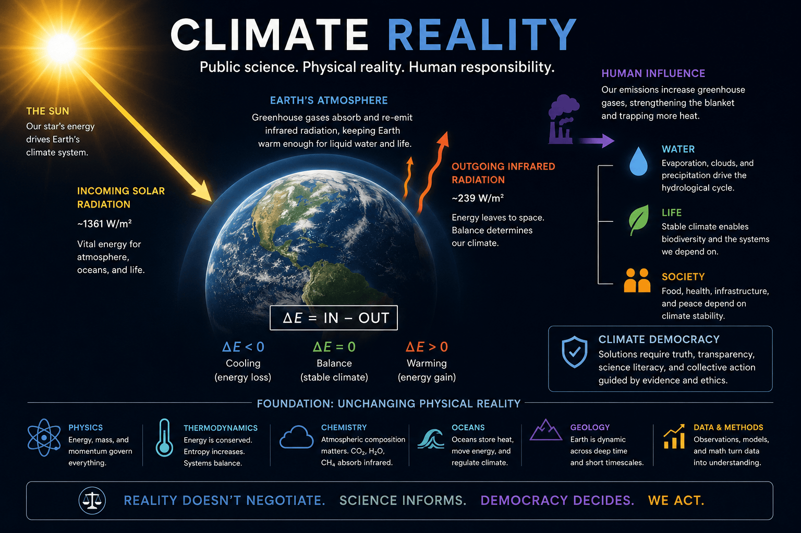

Climate Reality
Demystifying public science with context, math, and visual evidence.
Climate Reality describes what climate democracy prescribes: false claims are inconsistent with the Sun’s mass, Earth’s atmosphere, and the measurable energy systems that make life possible.
$c = \sqrt{E/m} \neq -1$

Demystifies
One-page public explanations that turn confusion into readable structure.
Lab Reports
Research notes, arXiv readings, and visual reports will be listed here.
About
Climate Reality is an init site for public-facing science communication, diagrams, reports, and climate-democracy specifications.